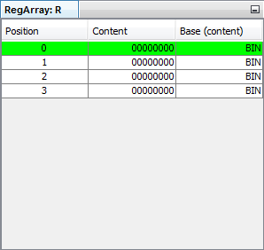

This window displays the content of its corresponding register arrays. The first column shows the position of each register. In the second column the register contents of the previous shown position are displayed. These contents are editable by double-clicking the table cell. The base is changeable in the third column. Depending on the current content of the reference, the corresponding position in the table is highlighted green.
